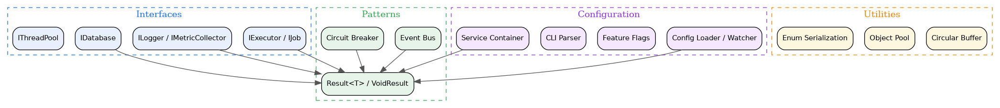

- Generated by
 1.12.0
1.12.0
|
Common System 0.2.0
Common interfaces and patterns for system integration
|
Common System provides shared interfaces, patterns, and utilities for the kcenon ecosystem. It is a foundational C++20 header-only library that enables seamless integration between system modules while maintaining zero runtime overhead through template-based abstractions and interface-driven design.
As the Tier 0 cornerstone, every ecosystem project depends on Common System for consistent error handling, task execution interfaces, and architectural patterns.
| Category | Feature | Description |
|---|---|---|
| Patterns | Result<T> | Rust-inspired monadic error handling with and_then, map, or_else |
| Patterns | Circuit Breaker | Resilience pattern with CLOSED / OPEN / HALF_OPEN states |
| Patterns | Event Bus | Thread-safe synchronous pub/sub messaging |
| DI | Service Container | Thread-safe dependency injection with singleton, transient, and scoped lifetimes |
| Config | Config Loader | Configuration management with file watching and hot-reload |
| Config | Feature Flags | Runtime feature toggles with dependency tracking |
| Config | CLI Parser | Command-line argument parsing |
| Utils | Circular Buffer | Fixed-size, lock-free ring buffer |
| Utils | Object Pool | High-performance object pooling with RAII return |
The library is organized into layers. Higher layers depend on lower layers, but never the reverse.

A minimal example using Result<T> and the service container:
| Module | Directory | Key Headers | Description |
|---|---|---|---|
| Adapters | adapters/ | adapter.h, smart_adapter.h | Adapter and smart adapter patterns |
| Bootstrap | bootstrap/ | system_bootstrapper.h | System bootstrapping and initialization |
| Concepts | concepts/ | callable.h, container.h, core.h | C++20 concepts (Resultable, Unwrappable, callable, container) |
| Config | config/ | config_loader.h, cli_config_parser.h, feature_flags.h | Configuration loading, CLI parsing, and feature flags |
| DI | di/ | service_container.h, unified_bootstrapper.h | Thread-safe dependency injection container |
| Error | error/ | error_codes.h, error_category.h | Centralized error codes and category system |
| Interfaces | interfaces/ | executor_interface.h, logger_interface.h | Core abstractions: IExecutor, IJob, ILogger, IDatabase |
| Logging | logging/ | log_functions.h, log_macros.h | Log functions and convenience macros |
| Patterns | patterns/ | result.h, event_bus.h | Result<T> error handling and event bus |
| Resilience | resilience/ | circuit_breaker.h | Circuit breaker with RAII guard |
| Utils | utils/ | circular_buffer.h, object_pool.h | High-performance utility data structures |
| Example | Source | Description |
|---|---|---|
| Result Example | result_example.cpp | Result<T> error handling patterns and monadic chaining |
| Executor Example | executor_example.cpp | Executor interface usage and task submission |
| ABI Version Example | abi_version_example.cpp | ABI version checking and compatibility validation |
| Unwrap Demo | unwrap_demo.cpp | Result unwrapping, value_or, and chaining patterns |
| Multi-System App | multi_system_app/main.cpp | Multi-system integration with config and DI |
New to common_system? Start here:
Choosing systems for a new project? See the Ecosystem Guide for a decision tree, adoption order, and minimal combinations.
Common System is the foundation (Tier 0) of the kcenon ecosystem. Every other system depends on its interfaces and patterns. Use the Ecosystem Guide if you are deciding which systems to adopt.
| System | Tier | Uses from common_system | Repository |
|---|---|---|---|
| thread_system | 1 | IExecutor, IJob, Result<T> | https://github.com/kcenon/thread_system |
| container_system | 1 | Result<T>, IExecutor | https://github.com/kcenon/container_system |
| logger_system | 2 | ILogger, Result<T> | https://github.com/kcenon/logger_system |
| monitoring_system | 3 | IMonitor, Event Bus, Result<T> | https://github.com/kcenon/monitoring_system |
| database_system | 3 | IDatabase, IExecutor, Result<T> | https://github.com/kcenon/database_system |
| network_system | 4 | IExecutor, Result<T> | https://github.com/kcenon/network_system |
| pacs_system | 5 | Full ecosystem | https://github.com/kcenon/pacs_system |